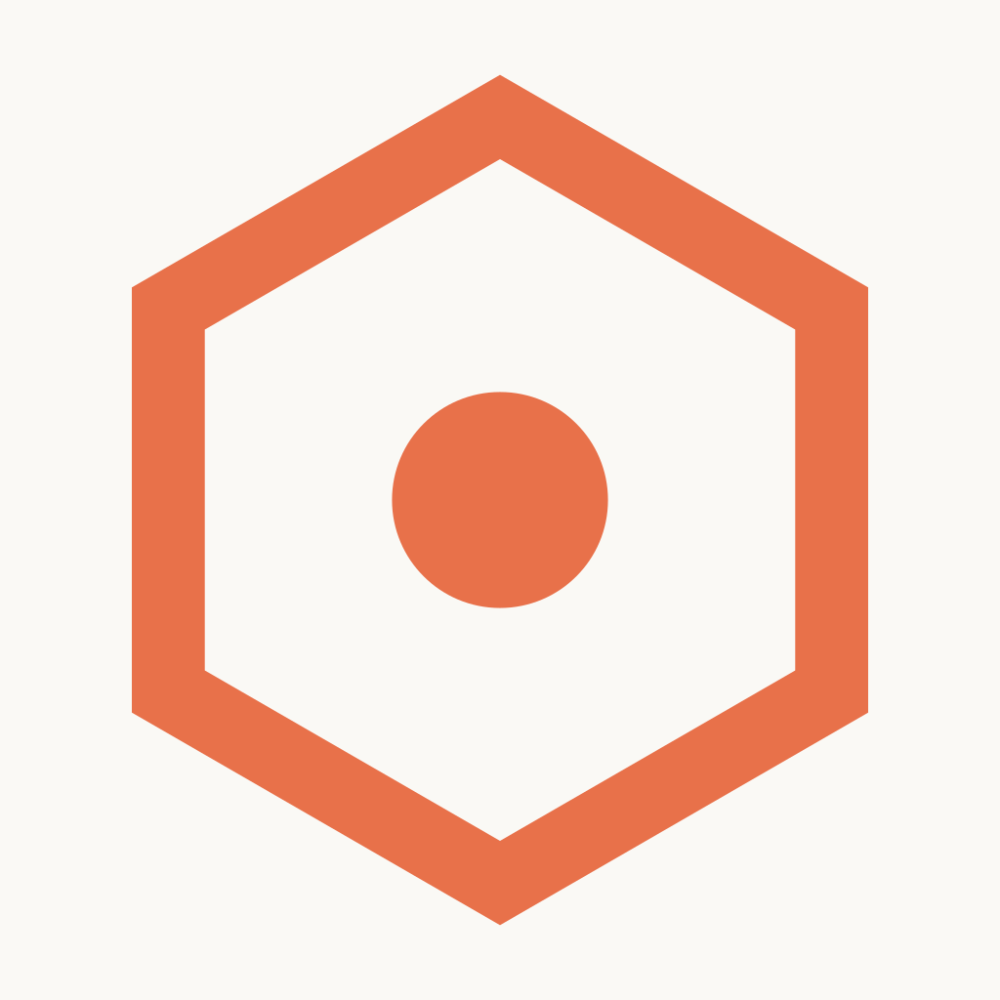

2025 — PresentApprox
Social media platform, co-developed with a friend
A location-based social platform with a live map, proximity discovery, real-time chat, stories, clubs and a short-video feed. It is a React Native (Expo) app on top of a Django REST API, released on iOS as a closed beta on TestFlight that anyone can join through a public invite link.
- Real-time chat and notifications with Django Channels WebSockets over a Redis channel layer
- PostgreSQL data models with connection pooling and per-endpoint rate limiting
- Backend deployed on Railway as an ASGI (Uvicorn) web service with a separate background worker
- User media hosted in Cloudflare R2 object storage (S3 API) and served from a custom domain
- AI moderation pipeline for uploaded media: video frames are extracted with Cloudflare Media Transformations and classified by Llama 4 Scout on Workers AI, with flagged content held for human review
- Go microservices for the moderation worker and push-notification dispatcher, run with Docker Compose alongside Django, PostgreSQL and Redis for end-to-end local testing
React Native, Expo, Django, PostgreSQL, Redis, Go, Railway, Cloudflare R2, Workers AI